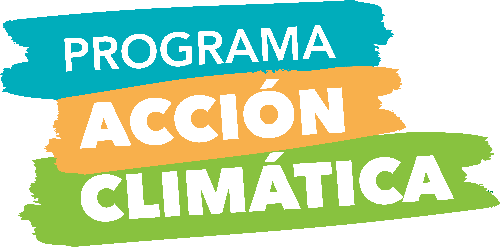

Herramientas pedagógicas para enseñar el equilibrio entre iluminación urbana, astronomía y preservación de fauna nocturna.
¿Qué evidencia la evaluación PAC 2026? En el Hito 4, los estudiantes confunden con frecuencia la función del efecto invernadero natural con el agujero de la capa de ozono, creyendo erróneamente que "el efecto invernadero siempre es malo y destruye la atmósfera". Asimismo, muchos consideran que la luz urbana sólo afecta la "visión de las estrellas", sin percatarse de su impacto destructivo en la navegación de aves marinas y la salud humana.
Filtra la radiación letal UVC y parte de la UVB, desintegra meteoritos pequeños y modera la temperatura diaria. Sin atmósfera, la variación térmica diaria en Antofagasta sería extrema (-100°C noche / +120°C día).
Es el flujo luminoso innecesario emitido sobre el plano horizontal o en longitudes de onda azul/blanca fría. Provoca el sky glow (brillo de cielo) que "borra" galaxias y nebulosas para la astrofotografía y telescopios de investigación.
Aves como la Golondrina de mar negra o el Petrel usan la luna y estrellas para orientarse mar adentro en sus primeros vuelos. Las luces blancas urbanas las encandilan, provocando caídas masivas en calles y patios.
Dos frascos idénticos bajo una lámpara incandescente: uno abierto y otro sellado con film plástico y una pizca de bicarbonato/vinagre (CO₂). Se mide con termómetro cada 5 minutos. Los alumnos grafican cómo los gases de invernadero atrapan la radiación infrarroja de onda larga.
Equipados con una ficha de inspección simple, los alumnos recorren el patio y pasillos de noche o al atardecer: ¿Las luces apuntan al suelo o al cielo? ¿Son blancas frías o cálidas? ¿Tienen campana protectora (Full Cut-off)? Proponen un plan de rediseño de bajo costo (ej. agregar viseras caseras a focos halógenos).
En noviembre y diciembre, miles de volantones caen en la ciudad. El curso debe crear una campaña escolar de rescate: protocolo de cómo tomar un ave caída (con toalla limpia, en caja de cartón ventilada sin comida ni agua) y contactar al SAG o red de voluntarios.